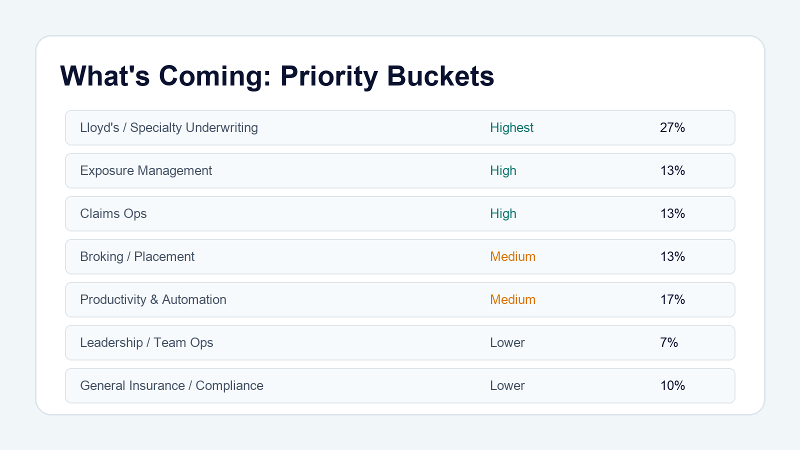
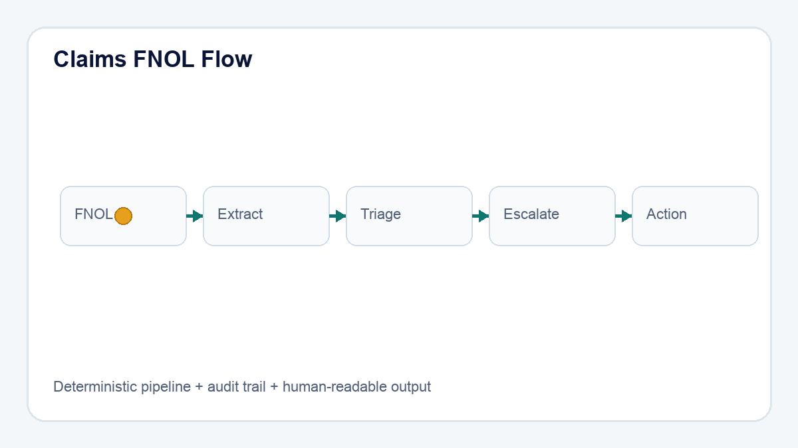

What is coming next: grouped roadmap by insurance workflow
The next phase is not random app shipping. It's grouped by problem space and operating rhythm.
That way the series tells a coherent story instead of a scattered list of builds.
We are sequencing by business value and workflow adjacency. The spine stays the same (capture -> extract -> decide -> explain -> audit), while the domain shifts by bucket priority.
Bucket priorities:
1. Lloyd's / Specialty Underwriting | Highest | 8 days | 27%
2. Exposure Management | High | 4 days | 13%
3. Claims Ops | High | 4 days | 13%
4. Broking / Placement | Medium | 4 days | 13%
5. Productivity & Automation | Medium | 5 days | 17%
6. Leadership / Team Ops | Lower | 2 days | 7%
7. General Insurance / Compliance | Lower | 3 days | 10%
| Bucket | Priority | Days | % |
|---|---|---|---|
| Lloyd's / Specialty Underwriting | Highest | 8 | 27% |
| Exposure Management | High | 4 | 13% |
| Claims Ops | High | 4 | 13% |
| Broking / Placement | Medium | 4 | 13% |
| Productivity & Automation | Medium | 5 | 17% |
| Leadership / Team Ops | Lower | 2 | 7% |
| General Insurance / Compliance | Lower | 3 | 10% |
Which bucket should we accelerate first for your team?


Disclaimer: Product names, logos, and trademarks are the property of their respective owners and are used for editorial/demo context.